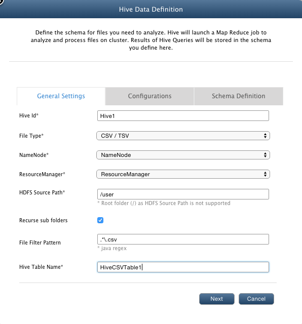
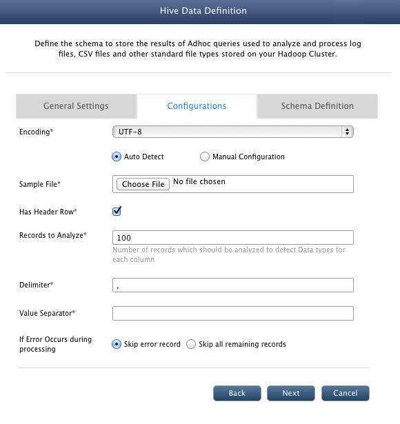
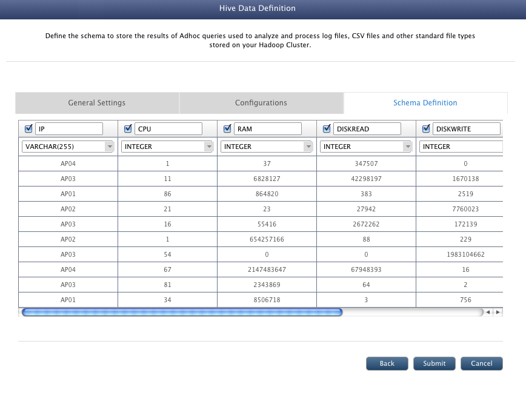

Hive Data Definition
In this chapter
This chapter explains how to define schema to perform Ad hoc analysis of the files stored on the cluster.
What is Hive ?
Hive is a data warehouse system for Hadoop that facilitates easy data summarization, ad-hoc queries, and the analysis of large datasets stored in Hadoop compatible file systems.
Hive provides a mechanism to project structure onto this data and query the data using a SQL-like language called HiveQL.
At the same time this language also allows traditional map/reduce programmers to plug in their custom mappers and reducers when it is inconvenient or inefficient to express this logic in HiveQL.
Various supported file type are :
- CSV / TSV
- LOG4J
- Apache Log
- IIS Log
- JSON
- Key / Value Pair
- Regex Parsable Text
- XML
What is Hive Data Definition ?
Hive data definition assigns relational structure to the files stored on the HDFS cluster.
You can easily query the structured data to extract specific information. For example, data definition for log files would contain columns like:
CLASS, FILENAME, MESSAGE, LINENUBER, etc. Now if you want to check for the classes in which exception occurred, you can search for the term
'Exception' in the 'MESSAGE' column in a relational way. You can run SQL like queries for your files on cluster to search for the required data.
Data definition for CSV files.
Following are the steps to create data definition for CSV files so that you can perform ad hoc analysis on those files:
- Before any data definition is added, there will be no adhoc table [ in "AdHocDB" database] in the QueryManager.
- Navigate to Data > Manage Hive and click Add.
- In the AdHoc Id textbox, enter AdHoc1. It is used to differentiate between multiple data definitions. Enter a unique Id.
- From the File Type drop-down list, select CSV/TSV.
- From the NameNode drop-down list, select the namenode of the cluster on which you want to perform analysis.
- From the ResourceManager drop-down list, select ResourceManager. The selected resource manager will be used to allocate resources while performing adhoc analysis.
- In the HDFS Source Path textbox, enter '/Data/csv'. This path points to the directory on the cluster where csv files are stored.
- In the File Filter Pattern textbox, enter *.csv. This data definition will be associated with the file types that you specify here.
- In the AdHoc Table Name textbox, enter AdHoc1CSVTable. When you execute any queries on this table (using Query Builder view), QueryIO will automatically
spawn a map-reduce job to perform ad hoc analysis on the files the full path of which matches with the filter specied above.
- Click Next.

- From the Encoding drop-down list, select UTF-8
- Select Auto Detect radio button to let QueryIO automatically determine schema definition for adhoc query. If you select Auto Detect, QueryIO will automatically detect the
schema of the file using the information that you provide in the subsequent fields.
- Click on "Choose File" in Sample File and select any .csv file given in the compressed folder $INSTALL_HOME/demo/Data.zip
- Has Header Row: If the csv file being uploaded has a header row specifying the column names, select the checkbox.
- Records to Analyze: The number of rows/records to analyze to determine the data types of the fields persent in the file.
- Delimiter: Specify the character that seperates the fields in the given file. If the fields in the file are seperated by a comma, enter ','.
- Value separator: It is the character that encloses each field. If the file contains values like: ["IP","CPU","RAM"], the value separator would be ".
- Click Next.

- In case of Auto Detect schema definition, this view shows the schema definition as determined by QueryIO by analyzing file content.
- Click on Submit button to create the table for the data definition.

You can use Query Designer to query the csv data registered using this Hive Data Definition.
Copyright © 2017 QueryIO Corporation. All Rights Reserved.
QueryIO, "Big Data Intelligence" and the QueryIO Logo are trademarks
of QueryIO Corporation. Apache, Hadoop and HDFS are trademarks of The Apache Software Foundation.